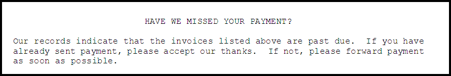
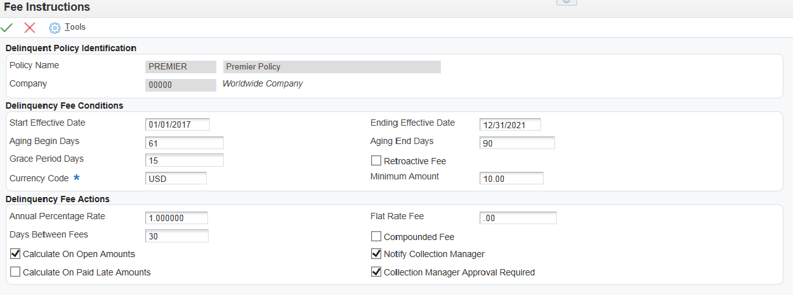

Overview of Delinquency Notices and Delinquency Fees
When customers are delinquent in paying their bills, you can send a delinquency notice on overdue invoices as a reminder to pay the delinquent balance. You also have a further option to apply fees to delinquent open amounts and/or apply late payment fees.
To generate notices and/or fees for customers there are several setup steps. Below are the required setup items for setting the Accounts Receivable System Constants for delinquency notices and the required Automatic Accounting Instructions (AAIs) for delinquency fees, defining a delinquency policy, and assigning the policy to a customer account.
Scope
This document is intended for users who are setting up and processing delinquency notices and fees in Accounts Receivable.
Details
Delinquency Notice Set Up
Accounts Receivable Constants (P0000)
In order to generate delinquency notices for a company, you need to select the 'Delinquency Notice' option in the Accounts Receivable Constants (P0000). You need to activate this for each company that you generate notices for, and this option should also be activated for the Default Company 00000.
To prompt customers to pay their overdue account balances, you must set up rules that the system uses to automatically process delinquent accounts. You can define multiple sets of rules that apply to different classes of customers, or rules that are specific to a customer. Each set of rules that you set up is a policy.
A policy is a common set of rules that the system applies equally to a class of customers. For this class of customers, you can control the rules at multiple levels. To limit the amount of setup that is required by the system to process delinquent customers, you can set up policies that are based on the common methods in which customers should be treated. Within each policy, you can specify when the system applies fees to delinquent invoices and how it generates notifications based on various levels of delinquency.
When you set up policies, you should define the most general (default) rules first, and then define specific instructions for the exceptions.
NOTE: After you associate a policy with a customer, either manually or automatically using the default policy that was established for company 00000, the association remains in effect until you assign a different policy to the customer. You must set up a blank policy name for company 00000 to use as the default policy.
1. Policy Definition
Policies can be defined using Define Delinquency Polices (P03B2501). Add the policy name and user-related information. This information is stored in the A/R Delinquency Policy (F03B25) table.
Navigate to Define Delinquency Policies (P03B2501).
Click 'Add'.
Name the policy and assign a company number (Company 00000 is the default). You should create a blank policy name for company 00000 to use as the default policy.
Click 'OK'.
2. Define Letter Names/Types
When sending notices to customers to indicate the payment has not yet been received, the letters sent to the customers must be defined using Delinquency Letter Text (P03B2801). The letters which are sent out to customers are stored in the form of attachments to each letter text record. The policy can be set up with varying severity levels of delinquency letters, which can be sent out according to the amount of time customers have lapsed in making payments.
Navigate to Delinquency Letter Text (P03B2801).
Click 'Add' and complete the Letter name. Letter names are case sensitive.
The Letter Type is optional and is a code used to identify and organize the text that prints on delinquency notices. The value that you specify must exist in User Defined Code (UDC) table 03B/LT. For example, you might set up letter types for any of the following reasons:
To represent the process in which the letter (text) is used, such as delinquency notices or statements.
To indicate a severity level. For example, LETTER1 might be used for the least severe notification text and LETTER5 for the most severe.
Language is also an optional field and can be used if you are using an environment with multiple languages applied and need to send notices to customers in various languages. The code must be set up in UDC 01/LP, which specifies the language to use on forms and printed reports. Before you specify a language, a code for that language must exist at either the system level or in your user preferences. Also, make sure that the Language Letter matches that of the customer's language as set up on their Address Book record on the 'Additional 1' tab.
Click 'OK' and relocate the letter in the Work with Letter Text screen.
Select or highlight the letter that was just added and choose the 'Attachments' row exit to add the letter text as a media object.
NOTE: The same letter may be used for more than one aging category in the Notification Rules of the policy.
Click 'Save' to return to the Work with Letter Text screen.
The following is an example of a Media Object Text Attachment for a Delinquency Letter.

3. Define Notification Rules
Once the policy name has been set up and the letter names and text have been created, the policy needs to be defined further using notification rules. These notification rules are defined and stored in the A/R Delinquency Policy Notification (F03B26) table.
Navigate to Define Delinquency Policies (P03B2501).
Locate the policy to which notification rules are to be applied and highlight it, or press 'Add' to establish a new policy.
Choose the 'Notification' row exit.
Click 'Add'.
Complete the following required field:
Aging Category/Severity (AGC) - A notice will not be generated for an invoice until it reaches this aging category. Aging categories are defined either in the A/R Constants (P000) or in the processing options of the Print Delinquency Notices program (R03B525). A rule does not need to be established for each aging category, only for those aging categories that require a different letter. Only one letter will be printed for all invoices that meet the policy for each customer. For example, if one invoice falls into aging category 3 and another is in aging category 5, only the letter associated with aging category 5 will be printed (assuming rules for both aging categories are established.)
NOTE: Unless you are using a Tiered Notification policy, in which case a separate rule must be established for each aging category requiring a notice be sent.
Complete the following optional fields:
Threshold Percent (THP) - A notice will not be issued if the amount of the past due invoice is not at least the percent defined in this option. For example, if 10 is entered into this field, then the open amount of the past due invoice must be at least 10 percent of the total open invoice amount for the customer.
Grace Period Days - Enter the number that the system adds to the invoice due date to extend it for collection purposes. Generally, you specify the number of days that are required for a payment to arrive if it were mailed on the invoice due date. The system uses grace period days only when fees are calculated for the first time for the invoice. The system uses the value in the Date - Last FeeCalculated field to generate subsequent fees for the same invoice.
Currency Code (CRCD) - (In a Multicurrency environment only) The currency code is used to define the currency of the minimum amount field.
Minimum Amount (MINP) - In addition to the aging category and threshold percent, the invoice amount must be equal to or greater than the amount defined in this field to generate a notice.
Pay By Days - Enter the number of days to add to the aging date, which is defined in the processing options of the Credit Analysis Refresh program (R03B525), and to the grace days that are specified in the notification instruction, to determine the notification payment date.
Days Between Notifications (DELD) - Second and subsequent notices will not be generated until the number of days defined in this option have passed. Invoices are date-stamped at the time notices are generated.
Activity Item Priority (AIPR) - This field is used for sequencing activities displayed on the Account Activity Log.
Letter Name (LTNA) and Type (LTTY) - Determine which letter will print per aging category.
Collection Manager Approval Required (CMAR) - If activated, notices will be generated in a Pending status and will require the approval from the Collection Manager before they are printed.
Notify Collection Manager (NTCM) - A message will be sent to the Work Center for the Collection Managers to notify them that notices were generated for a customer. A separate message will be generated for each customer.
Hold Invoices (HDAR) - When this field is marked, entry of new invoices for the customers that have been assigned this policy is not permitted. Receipts may continue to be entered.
Collection Manager Review Required (MACL) - If the customer has aging amounts that are not current, and the policy does not have the External Collections Recommended activated, then the message Collection Review Required is sent to the Collection Manager when this field is activated.
External Collections Recommended (STCL) - In order to include customers on the Collection Report, this field must be activated. If the customer has aging amounts that are not current, and the policy does have the External Collections Recommended activated, then the message External Collections Recommended is sent to the collection Manager
Temporary Credit Message (TSTA) - The flash message on the Customer Master (P03013) will be changed to display the text associated with the value of this field for customers that break this policy. Valid values are established in the User Defined Code (UDC) Table 00/CM. To automatically return the credit message to its previous value, once payment has been received, activate the Reset Temporary Credit Message field in the policy definition.
Assign Policies to Customers
In order for the policies to apply to the invoices on customer accounts, the customer must be associated with the correct policy.
On Customer Master Information (P03013), select the customer.
Click on the Collection tab.
Enter the Policy Name for the desired company (as established in the policy set up section). Click on the >> button, or visual assist (depending on your release) for a list of valid policies by company. Leave blank if you wish to use the default policy established for Company 00000.
Click on the 'Delinquency Notice' field to activate it (a checkmark indicates it is activated).
In order to generate delinquency fees, the following Automatic Accounting Instructions (AAIs) need to be set up:
RFC is used to recognize revenue
RFD is used to recognize receivables.
Set up for default Company 00000 if all companies share the same account, otherwise set up for each company using a different account. Business Unit is optional.
Policies can be defined using Define Delinquency Polices (P03B2501). Add the policy name and user-related information. This information is stored in the A/R Delinquency Policy (F03B25) table.
1. Policy Definition
Navigate to Define Delinquency Policies (P03B2501).
Click 'Add'.
Name the policy and assign a company number (Company 00000 is default). Do not use the blank policy for Company 00000. To create a default (blank) policy for Company 00000, delete the version shipped with the software and create a new one.
See Policy Definition in Delinquency Notices section for further information.
2. Define Fee Instructions
If the policy is needed for adding fees to invoices paid late or past due, the Fee Instructions must be defined. Fee Instructions are maintained in the A/R Delinquency Policies Details (F03B27) table. This table is link to the policy (F03B25) by the Internal Policy Number (PLY) between the tables and stores the definitions to the policy.

From Define Delinquency Policies (P03B2501), find the policy to which fees are going to be assigned and highlight or select it.
Choose the 'Fees' row exit to go to Work with Delinquency Fees screen.
Click 'Add' and complete the following required fields:
Start Effective Date (EFTB) and Ending Effective Date (EFTB) - Policies may be established to become active at a future date.
Aging Begin Days (AGDB) and Aging End Days (AGDE) - This determines how many days past the due date that fees will begin to be assessed. Different fee percentages can be established for different aging categories by using the Aging Begin and End Days fields.
Annual Percentage Rate (ANPR) - This is the annual percentage rate used to calculate delinquency fees on the open amount of an overdue invoice.
Calculate on Open Amounts (COPN) and/or Calculate on Paid Late Amounts (CPAD) - At least one of these flags must be set or no fees will be generated. These two flag determine when fees will be assessed on invoices. If the policy is defined with both set, fees will be generated on past due invoices and on invoices that were paid after the due date. The Calculate on Paid Late Amounts field is used in conjunction with a processing option in the Generate Fees program. If this processing option is not activated, fees will not be generated on late payments.
In a multi-currency environment only: Currency Code (CRCD) - The currency code is used to define the currency of the minimum amount field. Fees are generated in the currency assigned to the company of the invoice. Therefore, a separate fee will be generated by currency by company for the customer, if invoices are entered for companies with different base currencies.
Complete the following optional fields:
Grace Period Days (GPD) - Any number of days may be added to the due date of the invoice. Fees will not be generated if the payment is late, but is within the grace days.
Retroactive Fee (RETF) - If the payment is not received within the time frame including the grace days, the grace days may be ignored and a fee is assessed from the invoice due date.
Minimum Amount (PFAM) - The value entered in the Minimum Amount determines whether a fee will be generated. If the fee is less than the amount entered into this field, it will not be generated.
Compounded Fees (CMF) - This option determines if fees will be assessed on the previous past due delinquency fees when calculating the current fees. When the option is set, unpaid fees are included in the calculation.
Notify Collection Manager (NTCM) - This field enables work flow functionality and a message will be sent to the Work Center for the Collection Managers to notify them that fees were generated for a customer. A separate message will be generated for each customer.
Collection Manager Approval Required (CMAR) - If this field is activated, fees will be generated in a pending status and will require the approval from the Collection Manager before records are created.
Click 'OK' to save and the 'Cancel' to exit back to Policy Definition screen
Assign Policies to Customers
In order for the policies to apply to the invoices on customer accounts, the customer must be associated with the correct policy.
On Customer Master Information (P03013), select the customer.
Click on the 'Collection' tab.
Enter the Policy Name for the desired company (as established in the policy set up section). Click on the >> button or visual assist (depending on your release) for a list of valid policies by company. Leave blank if you wish to use the default policy established for Company 00000.
Click on the Delinquency Fees field (or Apply Finance Charge field in earlier releases) to activate it.